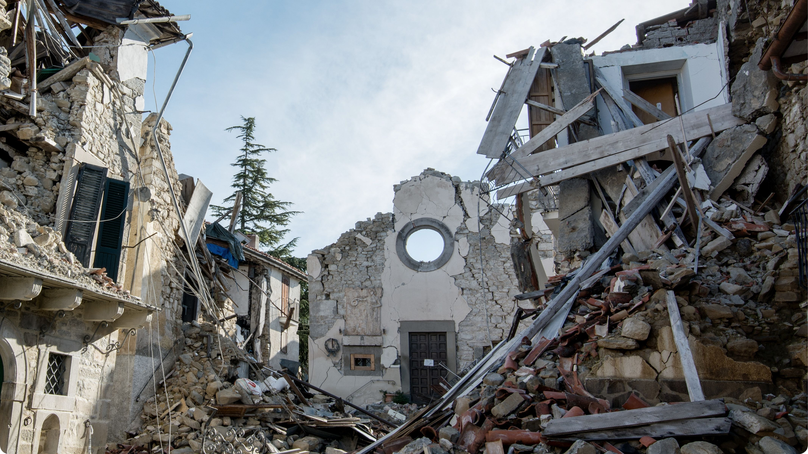

Causes of Earthquakes:
- Movement of tectonic plates.
- Pressure build-up along fault lines.
- Sudden movement of rock masses underground.
- Volcanic activity in specific zones.
Earthquake Prevention Tips:
- Secure heavy furniture, shelves, and appliances to walls.
- Place breakable or heavy objects on lower shelves.
- Prepare an emergency kit and establish a communication plan.
- Know the safe spots (under sturdy furniture) in each room.
- Practice the **Drop, Cover, and Hold On** drill regularly.
- Keep your phone charged and store emergency contact numbers.
What To Do During an Earthquake:
- **DROP** to the ground immediately.
- **COVER** your head and neck under a sturdy table or desk.
- **HOLD ON** until the shaking stops completely.
- Stay away from glass, windows, mirrors, and tall furniture.
- If outside, move to an open area away from buildings and utility lines.
- If in a vehicle, stop in a clear spot and remain inside until the shaking ends.
What To Do After an Earthquake:
- Stay Calm and check yourself and others for injuries.
- Expect and prepare for strong aftershocks.
- Turn off gas, electricity, and water immediately if you suspect damage or leaks.
- Avoid damaged buildings and areas with falling debris.
- Listen to official emergency updates via radio or phone.
- Confirm safety and do not re-enter damaged buildings until they are inspected.